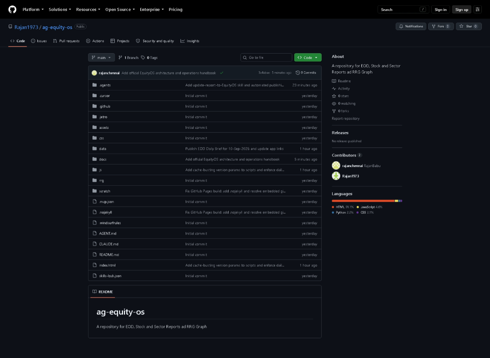
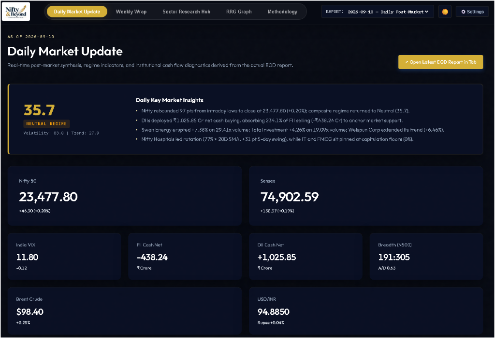
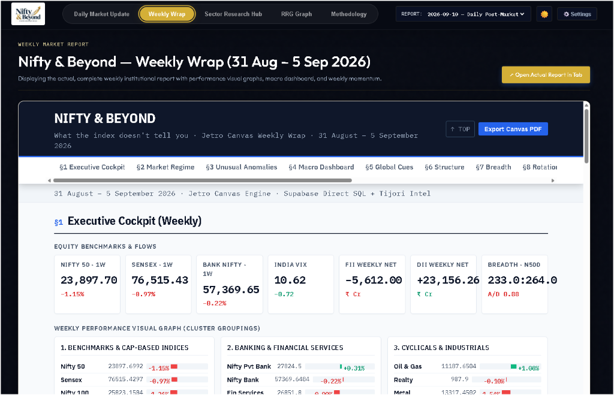
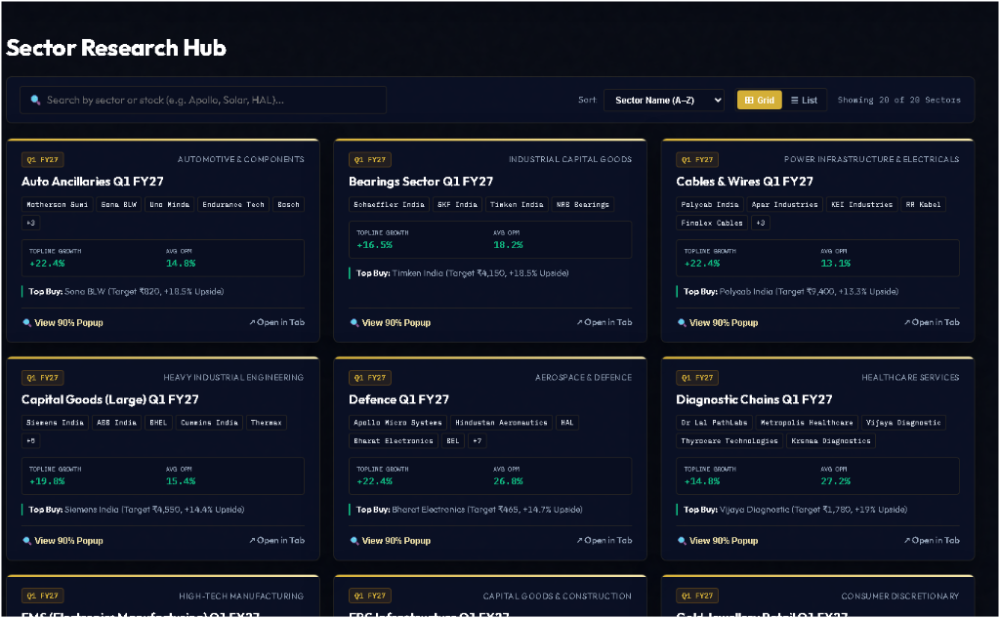
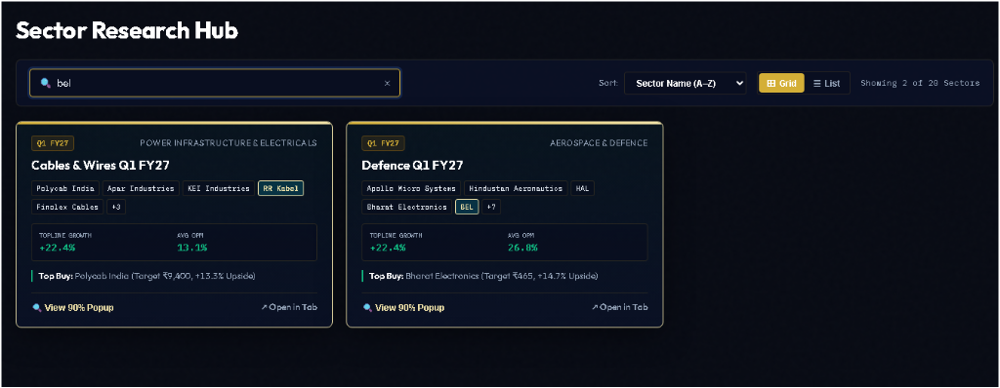
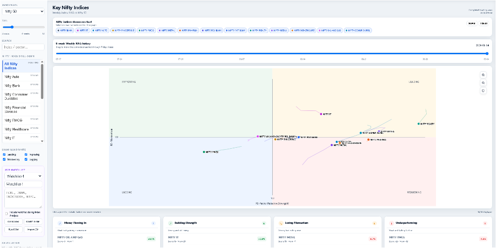
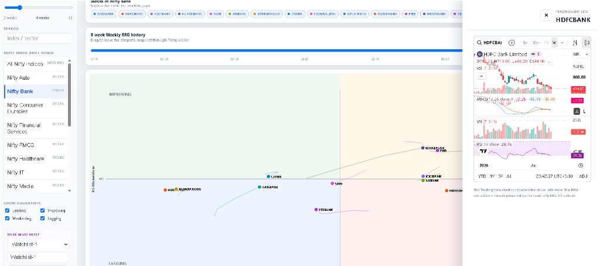

EquityOS Handbook: Architecture, Operations & Report Publishing Guide
Platform: Nifty & Beyond — What the index doesn't tell you
Live Web Application: https://rajan1973.github.io/ag-equity-os/
GitHub Repository: https://github.com/Rajan1973/ag-equity-os
Primary Workspaces:D:\Anti Gravity\equity-os&D:\Anti Gravity\post-market-report
Table of Contents
- Executive Summary & Architectural Vision
- Upstream Report Generation Pipeline
- 2.1 Daily Post-Market Brief (
daily-briefSkill) - 2.2 Institutional Sector Research (
rajan-sector-analysisSkill) - 2.3 Fundamental Stock Research (
cashparency-stock-analyzerSkill) - GitHub Repository Architecture & Data Topology
- 3.1 Repository Structure & Asset Map (Image 3)
- 3.2 The Flat-File Static Philosophy: Why It Empowers EquityOS
- EquityOS Web Application Modules In-Depth
- 4.1 Hero Section: Daily Market Update (Image 1)
- 4.2 Weekly Wrap Module (Image 3)
- 4.3 Sector Research Hub (Image 2)
- 4.4 Universal Search & Discovery Engine (Image 4)
- 4.5 Relative Rotation Graph (RRG) Macro Overview (Image 2 / 5)
- 4.6 RRG Constituent Drill-Down & TradingView Technical Drawer (Image 1 / 6)
- Settings & Dual-Mode Report Publishing Pipeline
- 5.1 Application Settings & UI Customization
- 5.2 Publishing Method 1: In-App Admin Upload Portal
- 5.3 Publishing Method 2: Antigravity Skill
update-report-to-EquityOS - Cache Invalidation & Edge Deployment Strategy
- Operational Cheat-Sheet & Best Practices
1. Executive Summary & Architectural Vision
EquityOS (hosted as Nifty & Beyond) is an institutional-grade equity intelligence operating system designed to cut through superficial index numbers and surface underlying market mechanics across the Indian capital markets (NSE & BSE).
Headline indices frequently deceive: an index can rise while 70% of its constituents plunge, or consolidate tightly while rapid, high-volume rotation transfers risk capital into defensive sectors or specialized capex plays. EquityOS aggregates, contextualizes, and visualizes:
- Daily Market Regimes: Composite regime scoring combining Advance/Decline breadth, distance to the 200-day moving average, realized volatility compression, and institutional cash flow absorption.
- Weekly Rotation Wraps: Comprehensive multi-session synthesis with capital flow distribution.
- Sector Intelligence Hub: In-depth quarterly earnings reviews across 20+ specialized industries, benchmarked against management guidance and raw material price cycles.
- Relative Rotation Graphs (RRG): Dynamic 4-quadrant momentum tracking measuring relative strength (RS-Ratio) and momentum (RS-Momentum) against the Nifty 50 benchmark with interactive single-stock technical drill-downs.
graph LR
subgraph Upstream Generation
A1[post-market-report<br>daily-brief skill] --> B[HTML Report]
A2[rajan-sector-analysis<br>sector skill] --> B
A3[cashparency<br>stock analyzer] --> B
end
subgraph Publishing Engine
B --> C{Publishing Mode}
C -->|Method 1| D[In-App Admin Portal]
C -->|Method 2| E[update-report-to-EquityOS]
end
subgraph ag-equity-os Repository
D --> F[(data/ & js/data-loader.js)]
E --> F
F --> G[Git Commit & Push]
end
subgraph Edge Distribution
G --> H[GitHub Pages Build]
H --> I[Fastly/Varnish CDN Edge]
I --> J[Nifty & Beyond SPA]
end
2. Upstream Report Generation Pipeline
EquityOS does not depend on a costly, fragile backend database server. Instead, it ingests self-contained, high-fidelity research documents generated upstream by specialized AI skills operating in paired Antigravity workspaces.
2.1 Daily Post-Market Brief (daily-brief Skill)
- Primary Workspace:
D:\Anti Gravity\post-market-report - Output Destination:
data/eod/daily/YYYY-MM-DD.html - Structure: An institutional 14-section post-market brief:
- Movement A (The Read): §1 Executive Scorecard, §2 Market Regime (Composite & Ex-Volatility), §3 What's Unusual Today (10 statistical anomaly ranks).
- Movement B (The Context): §4 Macro & Policy Dashboard, §5 Global Cues, Currency & Commodities (MCX spot, Brent, US Treasuries).
- Movement C (The Structure): §6 Index Market Structure & Sector Performance, §7 Breadth & Participation (% > 20D SMA ladder), §8 Sector Rotation (Rotating In vs Rotating Out), §9 Stock Scanners (Top 20 Gainers & Losers with 14D/63D volume multiples), §10 Momentum Composite (Fresh entries vs confirmed trends), §11 FII / DII Flows (NSE cash market net purchases and absorption ratios).
- Movement D (The Forward View): §12 What Changed Today, §13 F&O & Derivatives Positioning, §14 Tomorrow's Action Plan (confirmation triggers and invalidation levels).
2.2 Institutional Sector Research (rajan-sector-analysis Skill)
- Invocation:
/rajan-sector-analysis <Sector Name>(e.g./rajan-sector-analysis Cables & Wires) - Output Destination:
data/sectors/<sector-slug>-<period>.html - Methodology: Follows a strict 4-phase institutional protocol:
- Universe: Lists every listed sector constituent categorized by market cap tier (Large, Mid, Small).
- Selection & Data Feed Check: Validates active data connectivity with
tijori-finance-mcpbefore expending research effort. - Research: Gathers audited quarterly earnings, product revenue mix, regional breakdowns, guidance vs delivery track record, and red flags.
- Build: Compiles a single self-contained HTML document with pure CSS/SVG data visualizations, zero CDN dependencies, and interactive tables.
2.3 Fundamental Stock Research (cashparency-stock-analyzer Skill)
- Focus: High-conviction fundamental equity analysis covering balance sheet strength, return ratios (ROE/ROCE), debt-to-equity trajectories, free cash flow generation, and management execution.
- Output Destination:
data/stocks/<ticker>-analysis.html
3. GitHub Repository Architecture & Data Topology
The entire platform is hosted publicly at:
https://github.com/Rajan1973/ag-equity-os
3.1 Repository Structure & Asset Map (Image 3)

ag-equity-os/
├── .agents/
│ └── skills/
│ └── update-report-to-EquityOS/ # Automated publishing skill
│ ├── SKILL.md
│ └── scripts/
│ └── publish_to_equity_os.py # End-to-end publishing script
├── assets/ # Brand assets, high-res logos
├── css/
│ └── style.css # Unified responsive design system & themes
├── data/ # IMMUTABLE INTELLIGENCE REPOSITORY
│ ├── eod/
│ │ ├── daily/ # Daily post-market briefs (e.g. 2026-09-10.html)
│ │ └── weekly/ # Weekly wrap briefs (e.g. 2026-09-05-weekly.html)
│ ├── sectors/ # 20+ sector quarterly reports (*-q1fy27.html)
│ ├── stocks/ # Single-stock fundamental research notes
│ └── rrg/
│ └── nifty-indices-rrg-latest.json # Weekly RRG matrix (RS-Ratio & RS-Momentum)
├── docs/
│ └── EQUITYOS_HANDBOOK.md # Comprehensive architecture and operations handbook
├── js/
│ ├── app.js # Main UI controller, router, search, modals
│ ├── data-loader.js # Centralized report registry & sorting service
│ └── rrg-chart.js # HTML5 Canvas Relative Rotation Graph engine
├── .nojekyll # Bypasses Jekyll processing for raw HTML serving
├── index.html # Main SPA Shell & Scorecard Container
└── README.md
Language Distribution
As reflected in the repository metadata:
- HTML (91.1%): Represents the self-contained post-market reports, sector research notes, and the main SPA container.
- JavaScript (4.6%): Modular client-side router, search engine, and RRG Canvas engine.
- Python (2.2%): Automated report ingestion and publishing pipeline scripts.
- CSS (2.1%): Custom dark/light mode tokens and typography styling.
3.2 The Flat-File Static Philosophy: Why It Empowers EquityOS
Unlike traditional financial portals requiring database servers (PostgreSQL, MongoDB), application backends (Node/Python servers), and authentication APIs, EquityOS employs a Flat-File Static Web Architecture:
- Zero Hosting & Maintenance Cost: Hosted entirely on GitHub Pages without server upkeep, SQL migrations, or compute overhead.
- Instant Edge CDN Delivery: GitHub Pages routes requests through Fastly/Varnish global CDNs, delivering sub-millisecond document loading worldwide.
- Immutable Audit Trail: Every post-market report and sector revision is tracked via Git commits. Market commentary and forecasts remain timestamped and tamper-evident.
- Self-Contained Report Portability: Every HTML report in
data/contains its own styles, fonts, and scripts. Reports can be opened offline, emailed, downloaded as PDFs, or embedded seamlessly inside iframes. - Decoupled Autonomous Agent Architecture: Any Antigravity agent or automated script across any machine can push an updated analysis simply by committing a file and updating the registry.
4. EquityOS Web Application Modules In-Depth
4.1 Hero Section: Daily Market Update (Image 1)

The Hero Section (#tab-hero) serves as the executive cockpit, greeting the user with immediate market diagnostics from the latest session:
- Eyebrow Timestamp (
#hero-date-tag): Displays session date (e.g.AS OF 10 SEPTEMBER 2026). - Composite Market Regime Card:
- Regime Score (
#hero-regime-score): A weighted composite metric ranging from 0 to 100:0.0 – 34.9: Bearish Regime (Orange/Red badge)35.0 – 59.9: Neutral Regime (Gold/Yellow badge)60.0 – 100.0: Bullish Regime (Green badge)
- Regime Sub-Meta (
#hero-regime-meta): Displays component scores (e.g.Volatility: 83.0 | Trend: 27.9). - Key Market Insights List (
#hero-highlights-list): Bulleted summary highlighting top index moves, DII/FII absorption ratios, sector rotation hubs, and volume breakouts. - Unified Asymmetrical Scorecard Masonry:
- Large Tiles: Nifty 50 (
23,477.80,+46.30 (+0.20%)) and Sensex (74,902.59,+138.37 (+0.19%)). - Core Tiles: India VIX (
11.80), FII Cash Net (-₹438.24 Cr), DII Cash Net (+₹1,025.85 Cr), and Nifty 500 Breadth (191:305,A/D 0.63). - Wide Macro Tiles: Brent Crude (
$98.40) and USD/INR (94.8850). - Embedded Institutional Report Viewer (
#hero-report-iframe): - Displays the full HTML report in an interactive iframe with an
↗ Open Fullscreenstandalone tab button. - Daily EOD Reports Archive Grid (
#daily-reports-grid-container): - Chronological archive cards of previous sessions showing date, Nifty close, FII/DII flow totals, and regime tags.
How Hero Data Is Parsed and Hydrated
EquityOS uses Dual-Mode Hydration:
- Static First Paint: index.html contains static fallback markup of the latest session to eliminate Flash of Unstyled/Empty Content (FOUC).
- Dynamic JavaScript Hydration: On DOMContentLoaded, initData() in js/app.js queries window.EquityData.getLatestDaily(). It dynamically populates the scorecards, highlights, iframe source, and date selector dropdown (#report-date-select).
4.2 Weekly Wrap Module (Image 3)

Accessible via the Weekly Wrap tab (#tab-weekly), this view provides multi-day structural perspective:
- Weekly Executive Cockpit: Aggregates trailing 5-session returns for Nifty 50, Sensex, Bank Nifty, trailing weekly FII/DII totals, and cumulative breadth.
- Weekly Performance Visual Graphs: Cluster groupings comparing Cap-based indices (Large, Mid, Small), Banking & Financials, and Cyclicals vs Defensives.
- Embedded Canvas Weekly Note: Houses the complete weekly wrap document (data/eod/weekly/2026-09-05-weekly.html) with interactive section jump navigation (§1 Cockpit to §8 Rotation).
4.3 Sector Research Hub (Image 2)

The Sector Research Hub (#tab-sectors) is an institutional directory of Indian listed industries covering Q1 FY27 results:
- Sector Cards:
- Category Badge & Period (e.g. Q1 FY27 · AUTOMOTIVE & COMPONENTS).
- Sector Title (e.g. Cables & Wires Q1 FY27, Defence Q1 FY27, EMS Q1 FY27).
- Stock Constituent Chips: Clickable/searchable tags (e.g. Polycab India, Apar Industries, KEI Industries, RR Kabel).
- Financial KPI Metrics: Topline Growth (YoY %) and Average Operating Profit Margin (OPM %).
- Top Buy Pick: Top-conviction stock recommendation with target price and modeled upside (e.g. Bharat Electronics (Target ₹465, +14.7% Upside)).
- Dual-Action Launchers:
- 🔍 View 90% Popup: Opens an overlay modal (#report-view-modal) displaying the complete research note within a sandboxed 90vh viewer.
- ↗ Open in Tab: Opens the raw HTML report directly in a standalone browser tab.
4.4 Universal Search & Discovery Engine (Image 4)

The Universal Search Bar (#sector-search-input) provides cross-dimensional query matching:
- Multi-Field Real-Time Indexing: Matches simultaneously against:
1. Sector Titles (e.g. "Defence", "Chemicals")
2. Categories (e.g. "Industrial Capital Goods", "Aerospace")
3. Constituent Stock Names & Tickers (e.g. typing "bel" immediately matches both Bharat Electronics in Defence and RR Kabel in Cables & Wires)
4. Industry Keywords & Themes (e.g. "solar", "semiconductor", "cdmo")
- Active Filter Highlighting: Matching constituent chips receive glowing golden border highlights.
- Live Counter & View Toggles: Displays filtered count (Showing 2 of 20 Sectors) with instant Grid / List layout switching.
4.5 Relative Rotation Graph (RRG) Macro Overview (Image 2 / 5)

The RRG Graph (#tab-rrg) implements Julius de Kempenaer’s Relative Rotation Graph algorithm natively in an HTML5 Canvas engine (js/rrg-chart.js):
Quadrant Mechanics
- Horizontal Axis (X): RS-Ratio (Measures relative performance vs Nifty 50 benchmark; >100 is outperforming).
- Vertical Axis (Y): RS-Momentum (Measures the rate of change of RS-Ratio; >100 is accelerating momentum).
| Quadrant | Location | Definition | Institutional Action |
|---|---|---|---|
| Leading | Top-Right | Strong relative strength & accelerating momentum | Heavy overweight allocation |
| Weakening | Bottom-Right | Strong relative strength but decelerating momentum | Profit taking / trim exposure |
| Lagging | Bottom-Left | Weak relative strength & decelerating momentum | Structural underweight / avoid |
| Improving | Top-Left | Weak relative strength but accelerating momentum | Watchlist accumulation / reversal bets |
Cockpit Controls
- Benchmark Selector: Defaults to
NIFTY 50(extensible to Sector benchmarks). - Tail Length Slider: Modulates trail history from 1 to 12 weekly nodes.
- 8-Week History Scrubber: Interactive timeline slider allowing users to rewind the market and replay sector rotation trajectories.
- Sector Multi-Select Toggles: Instant on/off filtering of individual index trails.
- Summary Intelligence Cards: Four quick-read cards categorized as:
- Money Flowing In (e.g. Nifty Oil & Gas)
- Building Strength (e.g. Nifty IT)
- Losing Momentum (e.g. Nifty Metal)
- Underperforming (e.g. Nifty FMCG)
4.6 RRG Constituent Drill-Down & TradingView Technical Drawer (Image 1 / 6)

A flagship feature of EquityOS is the Constituent Drill-Down Cockpit:
1. Sectoral Basket Selector (Left Sidebar):
- Allows users to shift focus from the broad index level (All Nifty Indices) down to specific industry universes such as Nifty Bank, Nifty Auto, Nifty IT, Nifty Financial Services, or Nifty Consumer Durables.
2. Individual Constituent Stock Chips (Top Ribbon):
- Selecting a sector dynamically populates all constituent stock chips (for example, in Nifty Bank: AXISBANK, HDFCBANK, ICICIBANK, KOTAKBANK, SBIN, AUBANK, BANKBARODA, CANBK, FEDERALBNK, IDFCFIRSTB, INDUSINDBK, PNB, UNIONBANK, YESBANK).
- Clicking any stock chip toggles its multi-week rotational trail on the RRG canvas.
3. TradingView Lite Slide-Out Technical Drawer:
- Clicking a stock chip launches an integrated TradingView Lite drawer on the right pane (e.g. HDFCBANK):
- Candlestick Price Action: High-frequency intraday and daily price bars with 52-week context.
- MACD Indicator (12, 26, 9): Real-time MACD line, signal line, and histogram divergence.
- RSI-14 Momentum: Tracks overbought/oversold boundaries (e.g. RSI 28.76 reflecting deep oversold capitulation).
- Volume Dynamics: Color-coded volume bars vs moving averages.
- Multi-Timeframe Horizon: 1m, 30m, 1h, 1D, 1W, YTD, 1Y, 5Y, All.
- Strategic Synthesis: Bridges top-down macro sector rotation with bottom-up technical execution timing.
5. Settings & Dual-Mode Report Publishing Pipeline
EquityOS provides two distinct ways to publish newly generated market intelligence notes:
┌────────────────────────────────────────────────────────────────────────┐
│ HOW TO PUBLISH TO EQUITYOS │
├───────────────────────────────────┬────────────────────────────────────┤
│ METHOD 1: IN-APP ADMIN PORTAL │ METHOD 2: ANTIGRAVITY SKILL │
├───────────────────────────────────┼────────────────────────────────────┤
│ • Upload via Web Browser UI │ • Run via Antigravity Prompt/CLI │
│ • Local file picker or path │ • Operates globally across folders │
│ • Client-side DOMParser scraping │ • Auto-extracts 15+ metrics │
│ • Stores in browser localStorage │ • Updates data-loader.js & HTML │
│ • Ideal for local draft preview │ • Auto git commit & pushes to web │
└───────────────────────────────────┴────────────────────────────────────┘
5.1 Application Settings & UI Customization
- Theme Toggle Button (
#theme-toggle-btn): Seamless switching between Dark Mode (data-theme="dark") and Light Mode (data-theme="light"). - Settings Modal Trigger (
#settings-btn): Prompts for administrative sign-in: - Username:
admin - Password:
password123
5.2 Publishing Method 1: In-App Admin Upload Portal
Once signed in via the Settings modal, the Admin Report Upload Portal (#admin-panel-modal) opens:
- Select Daily Market Update or Sector Report tab.
- Choose a local HTML file via the file picker, or enter a relative path (e.g.
data/eod/daily/2026-09-10.html). - Click Process & Publish Update ➔.
- Automated Client-Side Scraping:
- The browser's native
DOMParserparses the file. - Extracts Nifty, Sensex, VIX, FII/DII cash net flows, breadth counts, and executive highlights.
- Calls
EquityData.addDailyReport()orEquityData.addSectorReport(). - Persists the report in
localStorageundernb_custom_daily_reports. - Re-renders the hero scorecard and archive grid immediately.
5.3 Publishing Method 2: Antigravity Skill update-report-to-EquityOS
The update-report-to-EquityOS skill is a global automation pipeline available across all Antigravity workspaces (post-market-report, equity-os, etc.).
Step 1: Trigger the Skill
Immediately after generating a post-market or stock report in chat, prompt:
"Run
update-report-to-EquityOS" or "Publish this report to EquityOS"
Step 2: The Skill Prompts for Report Type
If not already obvious from context, the skill asks:
- Daily EOD Report (Target: data/eod/daily/YYYY-MM-DD.html)
- Stock Report (Target: data/stocks/<ticker>-analysis.html)
- Sector Report (Target: data/sectors/<sector-slug>-<period>.html)
Step 3: Fully Automated Execution
The bundled automation script (publish_to_equity_os.py) executes:
1. File Ingestion: Copies the report into D:\Anti Gravity\equity-os\data\... with standardized naming.
2. Metadata Scraping: Parses all 15+ scorecard metrics, regime scores, and highlights.
3. Data Loader Registry Update: Updates js/data-loader.js, deduplicating by ID and sorting dates descending.
4. Hero Scorecard & Fallback Update: Updates index.html static fallbacks, standalone tab buttons, and iframe links.
5. Cache-Buster Bumping: Appends an updated query parameter (?v=YYYYMMDD-HHMM) to all CSS and script links.
6. Git Commit & Push: Runs git add, git commit -m "Publish EOD Daily Brief for DD-Mon-YYYY", and git push origin main.
Direct CLI Execution Syntax
# Publish Daily Post-Market Brief:
python "C:\Users\arjun\.gemini\config\skills\update-report-to-EquityOS\scripts\publish_to_equity_os.py" --type daily --file "D:\Anti Gravity\post-market-report\output\2026-09-10.html"
# Publish Stock Fundamental Report:
python "C:\Users\arjun\.gemini\config\skills\update-report-to-EquityOS\scripts\publish_to_equity_os.py" --type stock --file "path\to\report.html" --ticker "WELCORP"
# Dry-run test without pushing to remote:
python "C:\Users\arjun\.gemini\config\skills\update-report-to-EquityOS\scripts\publish_to_equity_os.py" --type daily --file "path\to\report.html" --no-push
6. Cache Invalidation & Edge Deployment Strategy
The 10-Minute Cache Trap
GitHub Pages serves all static assets (.js, .css, .html) with a Cache-Control: max-age=600 header (10 minutes).
When an author updates data-loader.js and pushes to GitHub, users who previously visited the site will load data-loader.js from browser disk cache, continuing to see the previous day's data until the 10-minute cache expires.
The EquityOS Solution: Versioned Cache Busting
publish_to_equity_os.py automatically updates script tags in index.html with a build timestamp:
<!-- Busted cache guarantees instantaneous edge refresh -->
<link rel="stylesheet" href="css/style.css?v=20260910-2324">
<script src="js/data-loader.js?v=20260910-2324"></script>
<script src="js/rrg-chart.js?v=20260910-2324"></script>
<script src="js/app.js?v=20260910-2324"></script>
Whenever a new report is published, browsers recognize a new URL query string and immediately download the updated script, completely bypassing stale edge and browser caches.
7. Operational Cheat-Sheet & Best Practices
| Workflow | Command / Action | Key Files Affected |
|---|---|---|
| Generate Daily Brief | /daily-brief in post-market-report |
output/YYYY-MM-DD.html |
| Generate Sector Review | /rajan-sector-analysis <Sector> |
data/sectors/*.html |
| Generate Stock Report | /cashparency-stock-analyzer |
data/stocks/*.html |
| Publish to EquityOS | /update-report-to-EquityOS |
data/, js/data-loader.js, index.html |
| Test Local App | Open d:\Anti Gravity\equity-os\index.html in browser |
Verified locally |
| Check Live App | Visit https://rajan1973.github.io/ag-equity-os/ | Deployed in ~60s |
| Verify Git Sync | git status & git log -n 3 in equity-os |
origin/main branch |